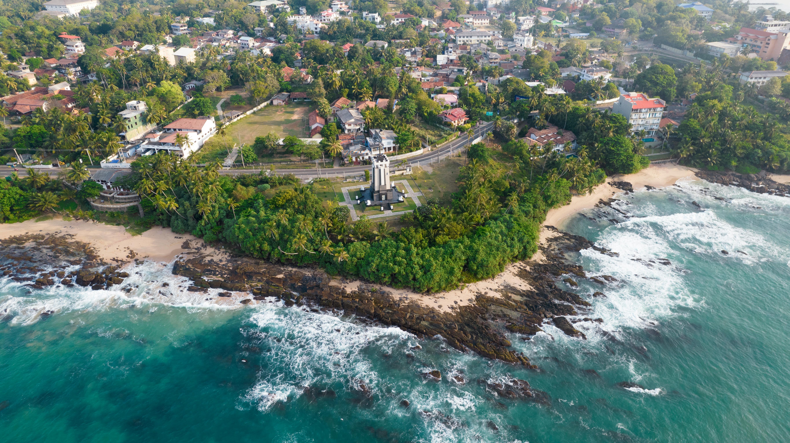

|  |
Trincomalee is a deepwater harbor and is home to the beaches of Nilaveli, Uppuveli and the off-shore Pigeon Island. It is known as a whale watching destination and the seven hot springs at Kanniya are located only 8 km (5.0 mi) away. The Trincomalee district is considered a major Buddhist cultural and archaeological site |